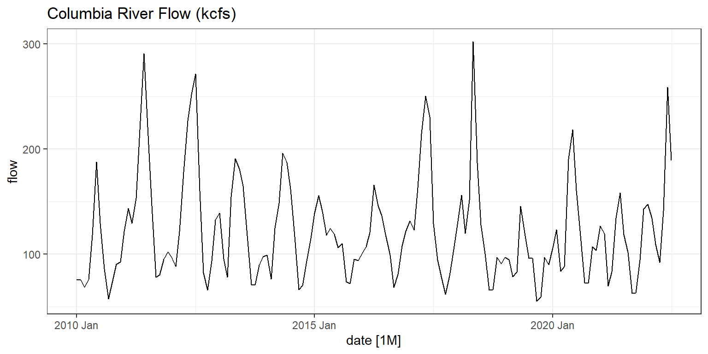
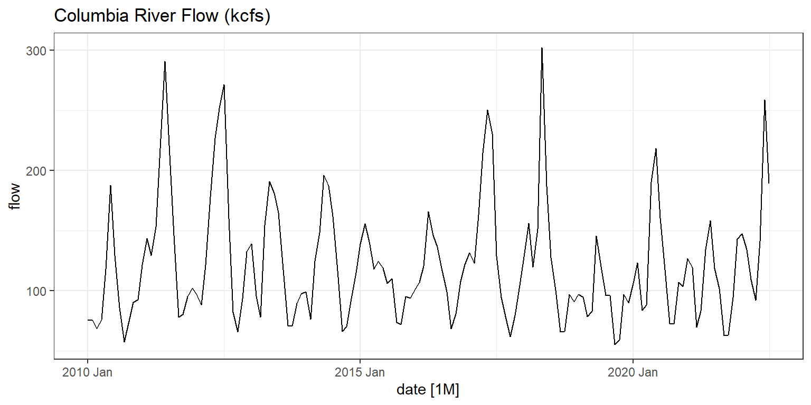
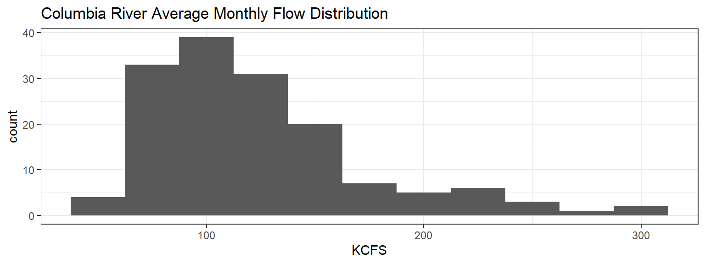
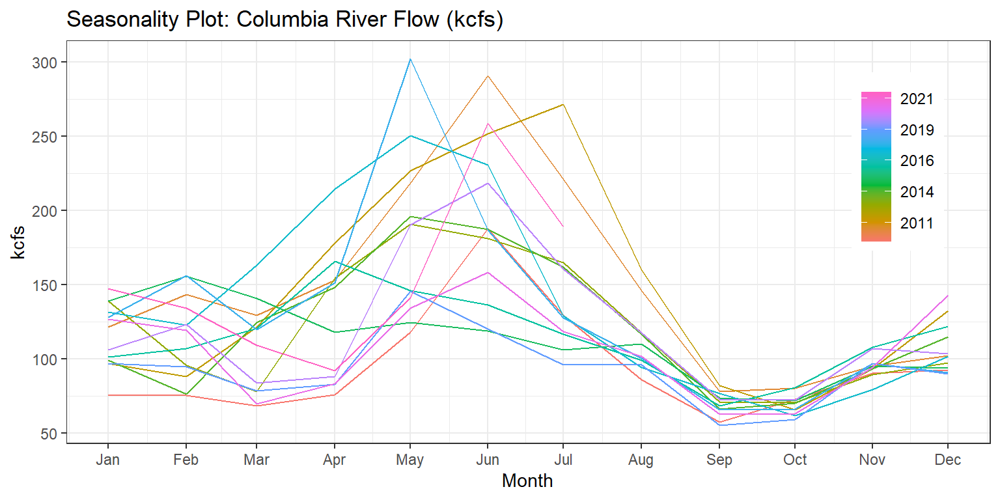
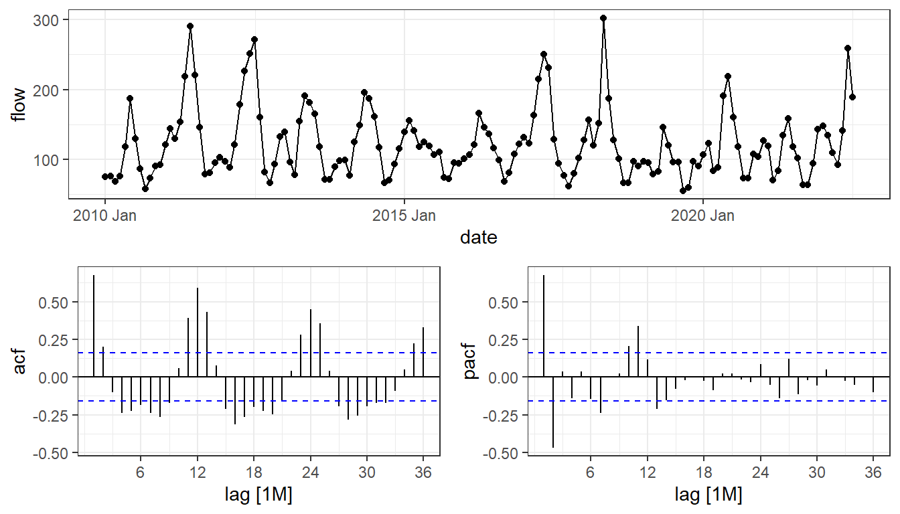
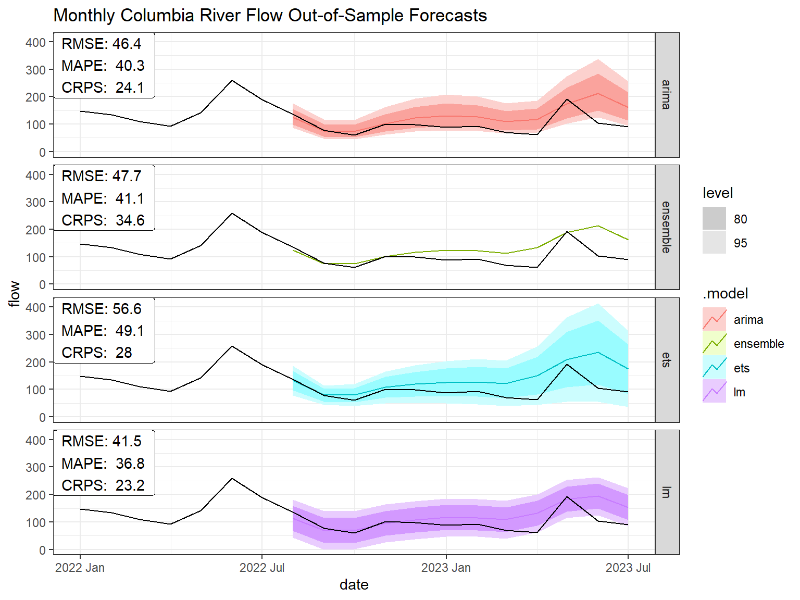

train %>%
autoplot(flow) +
ggtitle("Columbia River Flow (kcfs)")
\[\\[1in]\]
The Columbia River provides electrical generation for 14 dams in the Pacific Northwest. The years vary by a large margin and recent months are loosely correlated with the present, providing a difficult situation for medium and long term forecasting. This analysis compares the out-of-sample prediction by means of OLS, ARIMA, ETS, and ensemble models. It is found that ARIMA can be useful for shorter-term forecasts but an OLS model that evaluates the historical seasonal mean is a more reliable method.
The Columbia River begins in British Columbia, Canada running through Washington state and then along the Oregon border where it empties into the Pacific Ocean. Fourteen hydroelectric dams-11 American and 3 Canadian- are found along it. Their ability to generate power relies heavily on the river’s water volume, much of which is sold to California.
While rains can affect the amount of water in the river, the winter snow pack and heat progression throughout Spring and Summer largely determine how much water will flow in the river. The electric utilities that operate these hydroelectric plants must have an understanding of this river to maximize their operations. Short-term river forecasts are essential for daily operations. Hydroelectric plants must maintain their forebay—the body of water just before the dam— within a certain range mandated by the Federal Energy Regulatory Commission. To achieve this, they can manipulate two dials: the flow of water through their turbines and the use of spill gates.
Generally, water is sent through spill gates only when turbines are operating at their full capacity. In the early summer, when river flow is often at its peak, these dams are unable to fully utilize the excess water for power generation. This necessitates the opening of spill gates. Many of these are manually operated, highlighting the need for reliable river flow forecasts to ensure adequate personnel are on hand to manage the operation. Beyond just meeting regulatory guidelines, operators also aim to maintain the highest forebay level possible, as this allows the system to generate electricity more efficiently.
Long-term, these forecasts are necessary in scheduling maintenance of the turbines. During low flow periods of the year, plants have ample capacity to handle the water volume. This allows turbines to be shut down for routine maintenance without forsaking any significant amount of potential revenue.
train %>%
autoplot(flow) +
ggtitle("Columbia River Flow (kcfs)")
Between 2010 and 2022, the Columbia river has averaged 122.3 kcfs. The minimum in this period was 55.4 kcfs with a maximum of 302.2 kcfs.
train %>%
ggplot(aes(x = flow)) +
geom_histogram(binwidth = 25) +
ggtitle("Columbia River Average Monthly Flow Distribution") +
xlab("KCFS")
The seasonality plot below demonstrates how these flows change throughout a year. A complicating matter is the prediction of peak flows. The winter’s snowpack determines how much water will flow through the water, but the speed at which Spring warms determines when the flow begins to pick up.
train %>%
gg_season(flow) +
ggtitle("Seasonality Plot: Columbia River Flow (kcfs)") +
xlab("Month") +
scale_y_continuous("kcfs", breaks = seq(0, 400, 50)) +
theme(legend.position = c(.9, .7))
Because of the consequential nature of river flows, the literature abounds in various methods. The National Oceanic and Atmospheric Administration (NOAA) holds the Northwest River Forecast Center (NOAA 2023) that provides the public with 10-day and 120-day river flow forecasts.
Garen (1992) has found an improvement with linear models by implementing three methods: employing principal components regression, using cross validation, and systematic searching for optimal combinations of variables.
Danandeh Mehr et al. (2022) compares river forecast accuracy using genetic programming (GP), seasonal autoregressive integrated moving average (SARIMA), and an ensemble dubbed GP-SARIMA. The GP and SARIMA were found to both execute well on a day-ahead forecast, though struggled in the longer-term. The GP-SARIMA model was able to reduce the forecast RMSE by 1/4 in the longer-term.
Ilhan (2022) compares 102 machine learning models on day-ahead forecasts. While the models produced a spectrum of results, they were able to decrease the MAE and RMSE by considering an ensemble approach that averages their top performing models.
The approach in this analysis uses classical time series models for predicting one year of monthly river flows. A linear model, ETS, ARIMA, and an ensemble model will be estimated and evaluated on an out-of-sample test set. The river flow data used is provided through the United States Geological Survey (2023) API and aggregated to monthly averages.
The linear model is a tried and true model used in various situations. For flow prediction, only the seasonality, or month, will be used as an exogenous factor. While climate change may introduce a trend to river flows in the very long run, a trend will not be included in this model since we are not making long-term predictions. As such, this model will predict the monthly average within the training set for each month in the test set.
The ETS model will be estimated for the level and seasonality. Once again, and for similar reasons, a trend will not be included.
The ARIMA model will be determined through the Hyndman-Khandakar algorithm as specified in the fable package.
train %>%
gg_tsdisplay(
#difference(flow, 12) %>% difference(),
flow,
plot_type = "partial", lag_max = 36
)
The estimated models produced the following forecasts on the test set:
fx %>%
autoplot(
data %>% filter(year(date)>2021),
# level = NULL
) +
ggtitle("Monthly Columbia River Flow Out-of-Sample Forecasts") +
facet_grid(.model ~ .) +
geom_label(
data = fx %>%
accuracy(
test,
measures = list(point_accuracy_measures, distribution_accuracy_measures)
),
aes(x = -Inf, y = Inf, label = paste(
" RMSE:", round(RMSE, 1),
"\n", "MAPE: ", round(MAPE, 1),
"\n", "CRPS: ", round(CRPS, 1)
)),
hjust = 0, vjust = 1
)
fit %>%
select(arima) %>%
report()Series: flow
Model: ARIMA(1,0,2)(0,1,2)[12]
Transformation: log(flow)
Coefficients:
ar1 ma1 ma2 sma1 sma2
0.747 0.1019 -0.2630 -0.6553 -0.1901
s.e. 0.146 0.1765 0.1429 0.1324 0.1102
sigma^2 estimated as 0.03121: log likelihood=39.23
AIC=-66.46 AICc=-65.82 BIC=-48.85fit %>%
select(ets) %>%
report()Series: flow
Model: ETS(M,N,M)
Smoothing parameters:
alpha = 0.4867502
gamma = 0.0001012484
Initial states:
l[0] s[0] s[-1] s[-2] s[-3] s[-4] s[-5] s[-6]
123.8028 0.8609289 0.7784877 0.5741357 0.5696651 0.9538401 1.258872 1.695363
s[-7] s[-8] s[-9] s[-10] s[-11]
1.512702 1.081726 0.8805814 0.9235965 0.910102
sigma^2: 0.0425
AIC AICc BIC
1728.484 1732.040 1773.743 The LM does minimize the RMSE, MAPE, and CRPS. A complicating factor is that while strong seasonality does exist, the amount of water in a given year varies by a good margin as do the springs. A cold spring that suddenly turns hot will cause snow to melt faster causing large peaks. In contrast, a warm spring will cause the snow to begin melting earlier, but not necessarily at a fast rate. The linear model predicts each month to be the historical average, producing a decent forecast.
The ETS and ARIMA models both overestimate the actual flow, likely a result of the high water year for the last period of the training set. The positive ma1 term and negative ma2 term indicate that when there is this large change in the flow, the following month is usually the same direction, but the month after that results in a larger contraction in the opposite direction. This lines up with the warm/cold spring theory postulated in the previous paragraph.
A gamma value near zero in the ETS model indicates that river flows do not respond very much to changes in the prior season. The alpha equal to almost .5 indicates some response to recent months, but not overly so. Together these help explain why the linear model outperformed the other two, more complicated models: the prior years’ values are not a good indicator for the current year, and recent months can only go so far. When no exogenous variables are considered, this is nearly a random walk, for which the historical mean is the best approximate.
Medium and long term predictions of river flows are very difficult without exogenous factors. The higher correlation with more recent periods could imply that short-term forecasts are more achievable. A good approach for the long term is to simply use the historical average, an ARIMA model may prove useful for the shorter term forecasts. Further study using cross validation should be done to determine if a modified ensemble method could be beneficial where the ARIMA model is given a higher weight for the first couple of months and the linear model thereafter.